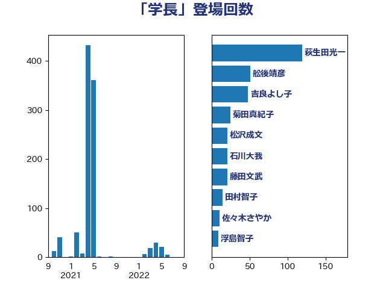

単語「学長」

| 萩生田光一 | 自由民主党 | 119 回 |
| 舩後靖彦 | れいわ新選組 | 51 回 |
| 吉良よし子 | 日本共産党 | 48 回 |
| 菊田真紀子 | 立憲民主党 | 25 回 |
| 松沢成文 | 日本維新の会 | 21 回 |
| 石川大我 | 立憲民主党 | 21 回 |
| 藤田文武 | 日本維新の会 | 21 回 |
| 田村智子 | 日本共産党 | 15 回 |
| 佐々木さやか | 公明党 | 11 回 |
| 浮島智子 | 公明党 | 9 回 |
| 伊藤孝恵 | 国民民主党 | 8 回 |
| 笠浩史 | 無所属 | 8 回 |
| 宮本岳志 | 日本共産党 | 7 回 |
| 末松信介 | 自由民主党 | 7 回 |
| 牧義夫 | 立憲民主党 | 7 回 |
| 道下大樹 | 立憲民主党 | 7 回 |
| 斎藤嘉隆 | 立憲民主党 | 6 回 |
| 松原仁 | 立憲民主党 | 5 回 |
| 玄葉光一郎 | 立憲民主党 | 5 回 |
| 足立康史 | 日本維新の会 | 5 回 |
| 吉田はるみ | 立憲民主党 | 4 回 |
| 奥野総一郎 | 立憲民主党 | 4 回 |
| 尾身朝子 | 自由民主党 | 3 回 |
| 横山信一 | 公明党 | 3 回 |
| 片山大介 | 日本維新の会 | 3 回 |
| 加藤勝信 | 自由民主党 | 2 回 |
| 吉川ゆうみ | 自由民主党 | 2 回 |
| 大島敦 | 立憲民主党 | 2 回 |
| 太田房江 | 自由民主党 | 2 回 |
| 宮本徹 | 日本共産党 | 2 回 |
| 櫻井周 | 立憲民主党 | 2 回 |
| 赤羽一嘉 | 公明党 | 2 回 |
| ながえ孝子 | 無所属 | 1 回 |
| 上野通子 | 自由民主党 | 1 回 |
| 今井絵理子 | 自由民主党 | 1 回 |
| 伊藤孝江 | 公明党 | 1 回 |
| 古屋範子 | 公明党 | 1 回 |
| 国光あやの | 自由民主党 | 1 回 |
| 大西健介 | 立憲民主党 | 1 回 |
| 宮沢洋一 | 自由民主党 | 1 回 |
| 小泉進次郎 | 自由民主党 | 1 回 |
| 山田太郎 | 自由民主党 | 1 回 |
| 山谷えり子 | 自由民主党 | 1 回 |
| 平口洋 | 自由民主党 | 1 回 |
| 平林晃 | 公明党 | 1 回 |
| 後藤田正純 | 自由民主党 | 1 回 |
| 新垣邦男 | 立憲民主党 | 1 回 |
| 有村治子 | 自由民主党 | 1 回 |
| 杉本和巳 | 日本維新の会 | 1 回 |
| 柴山昌彦 | 自由民主党 | 1 回 |
| 橋本岳 | 自由民主党 | 1 回 |
| 比嘉奈津美 | 自由民主党 | 1 回 |
| 江田憲司 | 立憲民主党 | 1 回 |
| 渡辺博道 | 自由民主党 | 1 回 |
| 石川昭政 | 自由民主党 | 1 回 |
| 石橋通宏 | 立憲民主党 | 1 回 |
| 福島伸享 | 無所属 | 1 回 |
| 秋野公造 | 公明党 | 1 回 |
| 稲津久 | 公明党 | 1 回 |
| 紙智子 | 日本共産党 | 1 回 |
| 自見はなこ | 自由民主党 | 1 回 |
| 荒井優 | 立憲民主党 | 1 回 |
| 菅義偉 | 自由民主党 | 1 回 |
| 西銘恒三郎 | 自由民主党 | 1 回 |
| 谷田川元 | 立憲民主党 | 1 回 |
| 青山繁晴 | 自由民主党 | 1 回 |
| 青木一彦 | 自由民主党 | 1 回 |
| 馬場伸幸 | 日本維新の会 | 1 回 |
| 高橋はるみ | 自由民主党 | 1 回 |
| 高橋千鶴子 | 日本共産党 | 1 回 |
| 高良鉄美 | 無所属 | 1 回 |
| 高階恵美子 | 自由民主党 | 1 回 |
| 鶴保庸介 | 自由民主党 | 1 回 |